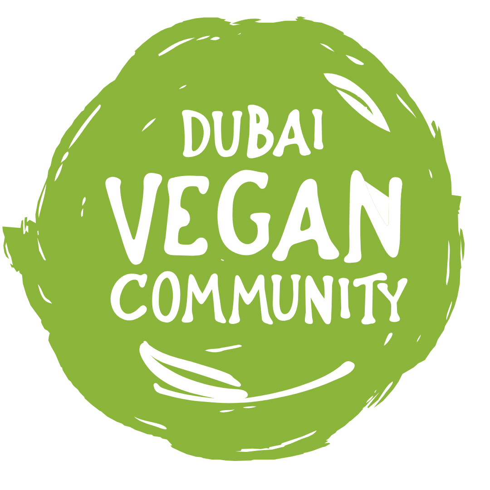

At the Table
Immersive, social and people-first. Best when belonging is the lead story.

Dubai Vegan CommunityThree visual directions
Each direction uses the same core story and actions. Compare the hierarchy, pace and feeling rather than hunting for a perfect finished page.
Immersive, social and people-first. Best when belonging is the lead story.
Editorial, calm and useful. Best when trusted discovery is the lead story.
Expressive, graphic and interconnected. Best when the community should feel like a movement.